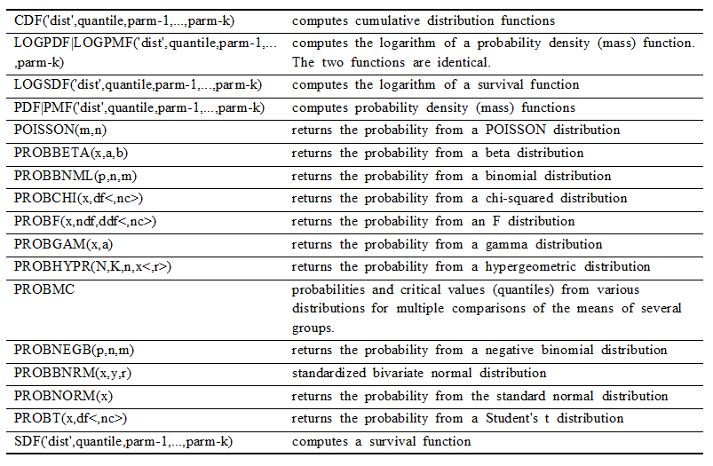
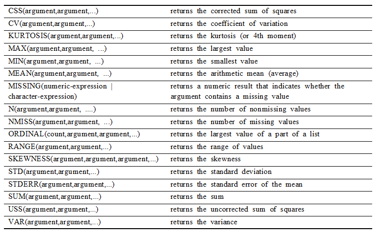
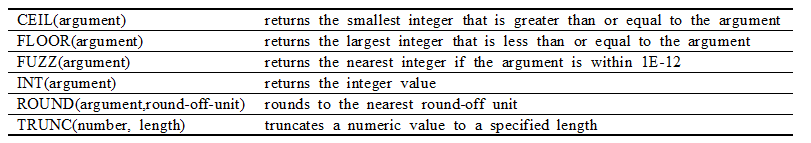
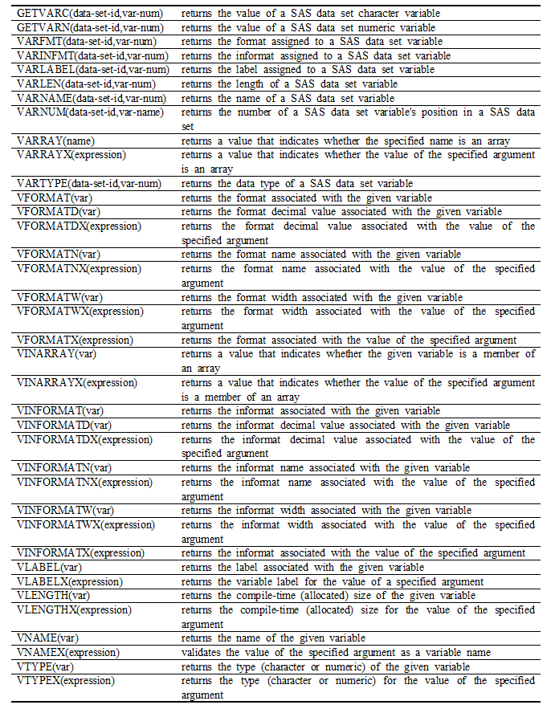

Chapter 10 Appendix
Arithmetic Functions

Character Functions

Date and Time Functions

Mathematical Functions

Noncentrality Functions

Probability and Density Functions

Quantile Functions

Sample Statistics Functions

State and ZIP Code Functions

Trigonometric and Hyperbolic Functions

Truncation Functions

Variable Information Functions
